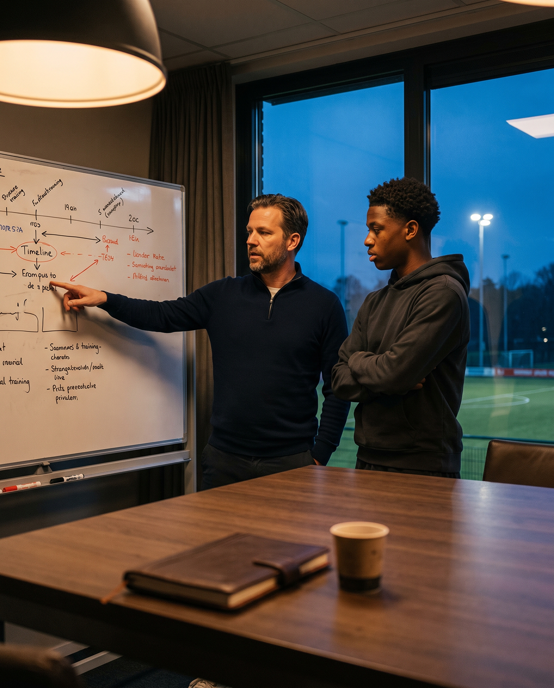
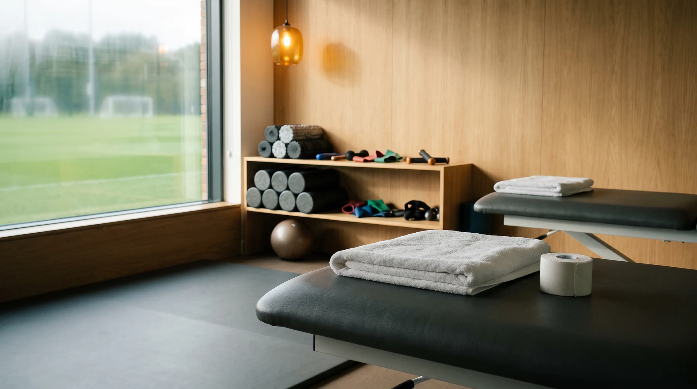
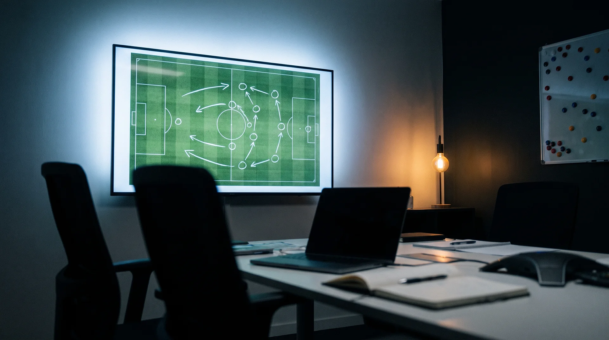
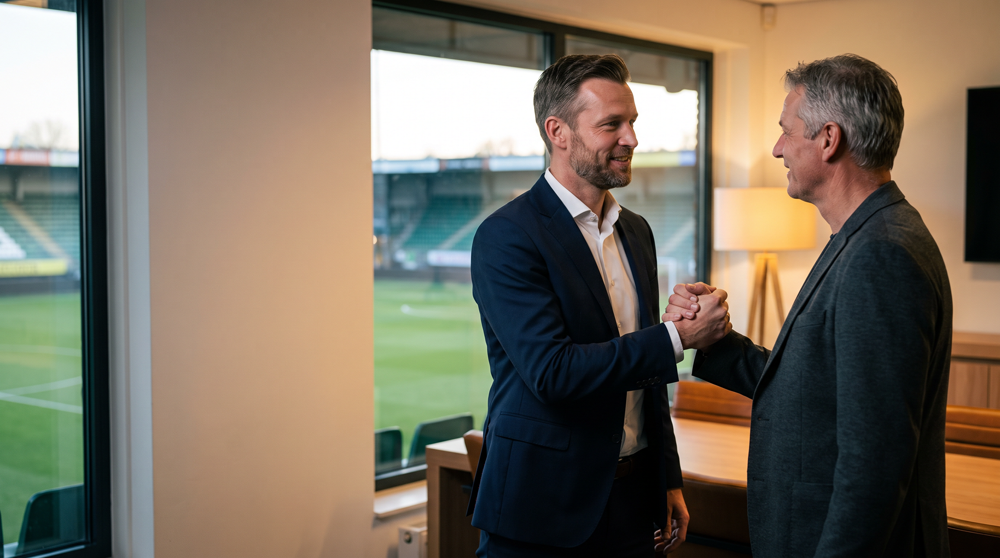

Alles wat je nodig hebt om verder te groeien, onder één dak.
Van je plan en je clubkeuze tot je training, je herstel en de beelden die we samen terugkijken, het hoort allemaal bij elkaar en gebeurt op dezelfde plek.
Je loopbaan rustig uitgestippeld
We kijken samen een paar jaar vooruit, kiezen de volgende stap met overleg, en regelen de afspraken eromheen zonder dat je er alleen voor staat.

Carrièreplanning
Samen een realistisch beeld maken van waar je nu staat en welke stappen de komende jaren bij je passen, in plaats van alles op één seizoen te gokken.
We gaan aan de keukentafel zitten, bespreken je speelminuten en je plezier, en zetten de keuzes op papier zodat iedereen hetzelfde plan voor ogen heeft.
Je weet waar je aan toe bent voor het seizoen begint, en je ouders kunnen meelezen en meepraten over elke stap die we voorstellen.
Clubkeuze en bemiddeling
We helpen je de club te kiezen waar je echt speelt en groeit, en we leggen de contacten met die clubs voor je aan.
We bellen de clubs die bij je passen, bespreken wat ze van je verwachten, en vertellen je eerlijk waar je sterk genoeg voor bent en waar nog niet.
Je hoeft zelf niet achter clubs aan te bellen, en jullie horen van ons wat er besproken is, ook als het antwoord even tegenvalt.
Contractvragen en onderhandeling
We begeleiden je bij de gesprekken over je contract en de afspraken die daarbij horen, zodat je weet wat er staat voordat je iets tekent.
We nemen het voorstel met je door en bespreken de voorwaarden, en waar het juridisch of fiscaal ingewikkeld wordt schakelen we eerlijk een jurist of specialist in.
Je zet geen handtekening onder iets dat je niet begrijpt, en jullie weten precies wie wat heeft gedaan en waarom.
Elke week een stap vooruit
Naast je club werk je bij ons gericht aan wat je beter wilt maken, met training, herstel, kracht en beelden die op elkaar aansluiten.
Extra trainingen
Trainingen bovenop die van je club, gericht op het onderdeel waar jij de komende weken aan werkt.
We pakken één ding tegelijk aan, bijvoorbeeld je eerste aanname, en herhalen dat net zo lang tot het in de wedstrijd vanzelf gaat.
Je ziet in de wedstrijd terug waar je aan hebt gewerkt, en jullie weten elke week waar de aandacht naartoe gaat.
Fysio
Begeleiding bij herstel en blessurepreventie, zodat je lichaam de belasting van het voetballen aankan.
We houden je belasting in de gaten, behandelen klachten voordat ze groot worden, en bouwen je rustig op na een blessure.
Je staat minder vaak langs de kant, en jullie krijgen te horen wanneer rust slimmer is dan doorgaan.
Gym
Krachttraining die past bij je leeftijd en je lichaam, gericht op sneller worden en sterker in de duels staan.
We bouwen je schema op met oefeningen die bij jouw fase horen, en we letten erop dat je techniek klopt voordat de gewichten omhoog gaan.
Je merkt in de laatste minuten dat je nog fris bent, en jullie zien een opbouw die bij je groei past.
Videoanalyse
Samen je wedstrijdbeelden terugkijken, zodat je ziet wat je deed en wat de volgende keer beter kan.
We zetten een beeld op pauze, bespreken rustig welke keuze je maakte, en bepalen samen waar we de week daarna aan gaan werken.
Je begrijpt je eigen spel beter, en jullie zien zwart op wit waarom we trainen aan wat we trainen.

Dit is onze eigen plek
De gym, de fysioruimte en de analysekamer zijn van onszelf, dus je ziet elke week dezelfde gezichten.


Zo werkt het allemaal samen
Je plan, je training en je herstel grijpen in elkaar, dus wat we op maandag op het scherm zien bepaalt wat je verderop in de week doet.
We kijken je beelden terug
We zetten je wedstrijd van het weekend op pauze en bespreken welk moment beter kon, bijvoorbeeld een aanname onder druk.
Extra training op wat we zagen
Op het veld herhalen we precies dat moment, net zo lang tot de beweging vanzelf gaat zonder dat je erover nadenkt.
Fysio houdt je fris
We checken hoe je lichaam de extra belasting aankan en behandelen kleine klachten voordat ze een probleem worden.

Een club belt over je
We bespreken de vraag van de club met je ouders en leggen jullie eerlijk voor wat deze stap wel en niet betekent.